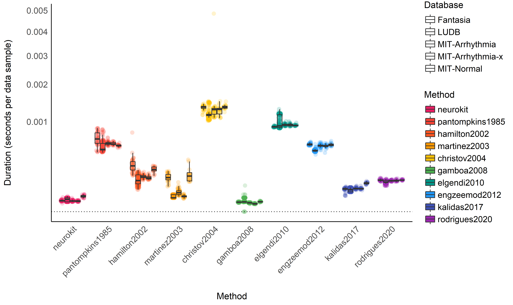
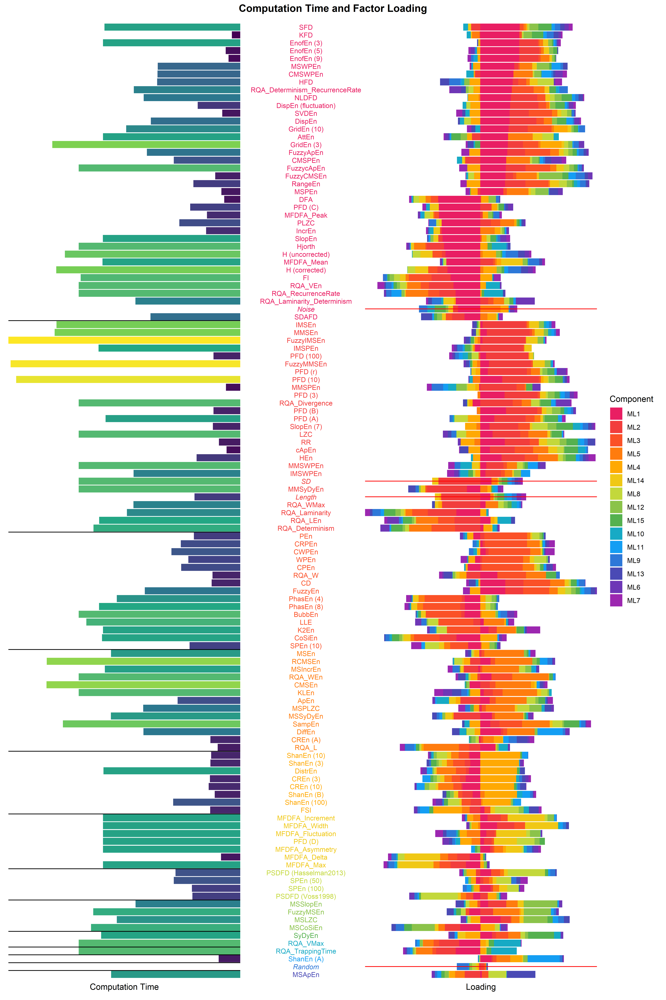

An GAM-based Approach to EEG/ERP Analysis using Python and R
Contents
An GAM-based Approach to EEG/ERP Analysis using Python and R#
This study can be referenced by citing the package.
We’d like to publish this study, but unfortunately we currently don’t have the time. If you want to help to make it happen, please contact us!
Introduction#
The aim of this study is to explore the feasibility of analyzing event-related potentials (ERP) under a regression framework, through the usage of non-linear links (using splines, and General Additive Models - GAMs). Combined with the usage of mixed models, theoretical benefits include the incorporation of more information (such as data at the single-trial, - and even single-channel - level), as well as the computation of marginal means and contrasts, allowing for a flexible and powerful way of analysing differences between conditions.
Procedure#
We will start by running a “traditional” ERP analysis for a single subject using the MNE Python package (Gramfort et al., 2013, 2014) to obtain “gold standard” baseline patterns of results. Then, we will first attempt to model the evoked potentials using a simple linear model with splines, before applying GAMs.
Data#
import numpy as np
import pandas as pd
import neurokit2 as nk
import matplotlib.pyplot as plt
import mne
# Download example dataset
raw = mne.io.read_raw_fif(mne.datasets.sample.data_path() + '/MEG/sample/sample_audvis_filt-0-40_raw.fif')
events = mne.read_events(mne.datasets.sample.data_path() + '/MEG/sample/sample_audvis_filt-0-40_raw-eve.fif')
# Create epochs including different events
event_id = {'audio/left': 1, 'audio/right': 2,
'visual/left': 3, 'visual/right': 4}
# Create epochs (100 ms baseline + 500 ms)
epochs = mne.Epochs(raw,
events,
event_id,
tmin=-0.1,
tmax=0.5,
picks='eeg',
preload=True,
detrend=0,
baseline=(None, 0))
# Generate list of evoked objects from conditions names
evoked = [epochs[name].average() for name in ('audio', 'visual')]
# Plot topo
mne.viz.plot_compare_evokeds(evoked, picks='eeg', axes='topo')
## [<Figure size 1800x1400 with 60 Axes>]
plt.savefig("figures/fig1.png")
plt.clf()
# Select subset of frontal electrodes
picks = ["EEG 001", "EEG 002", "EEG 003",
"EEG 005", "EEG 006",
"EEG 010", "EEG 011", "EEG 012", "EEG 013", "EEG 014"]
epochs = epochs.pick_channels(picks)
# Downsample
epochs = epochs.resample(sfreq=150)
# Convert to data frame and save
nk.mne_to_df(epochs).to_csv("data.csv", index=False)

ERP analysis using MNE-Python#
# Transform each condition to array
condition1 = np.mean(epochs["audio"].get_data(), axis=1)
condition2 = np.mean(epochs["visual"].get_data(), axis=1)
# Permutation test to find significant cluster of differences
t_vals, clusters, p_vals, h0 = mne.stats.permutation_cluster_test([condition1, condition2], out_type='mask', seed=111)
# Visualize
## <string>:1: RuntimeWarning: Ignoring argument "tail", performing 1-tailed F-test
fig, (ax0, ax1, ax2) = plt.subplots(nrows=3, ncols=1, sharex=True)
times = epochs.times
ax0.axvline(x=0, linestyle="--", color="black")
## <matplotlib.lines.Line2D object at 0x00000000BFAE7640>
ax0.plot(times, np.mean(condition1, axis=0), label="Audio")
## [<matplotlib.lines.Line2D object at 0x00000000BFAF3D30>]
ax0.plot(times, np.mean(condition2, axis=0), label="Visual")
## [<matplotlib.lines.Line2D object at 0x00000000BFAF3F40>]
ax0.legend(loc="upper right")
## <matplotlib.legend.Legend object at 0x00000000BFAF3EE0>
ax0.set_ylabel("uV")
# Difference
ax1.axvline(x=0, linestyle="--", color="black")
ax1.plot(times, condition1.mean(axis=0) - condition2.mean(axis=0))
## [<matplotlib.lines.Line2D object at 0x00000000BFB07B20>]
ax1.axhline(y=0, linestyle="--", color="black")
## <matplotlib.lines.Line2D object at 0x00000000BFB07CD0>
ax1.set_ylabel("Difference")
# T-values
ax2.axvline(x=0, linestyle="--", color="black")
h = None
for i, c in enumerate(clusters):
c = c[0]
if p_vals[i] <= 0.05:
h = ax2.axvspan(times[c.start],
times[c.stop - 1],
color='red',
alpha=0.5)
else:
ax2.axvspan(times[c.start],
times[c.stop - 1],
color=(0.3, 0.3, 0.3),
alpha=0.3)
## <matplotlib.patches.Polygon object at 0x00000000BFB16550>
## <matplotlib.patches.Polygon object at 0x00000000BFB16BE0>
hf = ax2.plot(times, t_vals, 'g')
if h is not None:
plt.legend((h, ), ('cluster p-value < 0.05', ))
## <matplotlib.legend.Legend object at 0x00000000BFB16D00>
plt.xlabel("time (ms)")
## Text(0.5, 0, 'time (ms)')
plt.ylabel("t-values")
## Text(0, 0.5, 't-values')
plt.savefig("figures/fig2.png")
plt.clf()

As we can see in the figure, the auditive condition led to a significantly different negative deflection around 100 ms (referred to as the N100, while the visual condition is related to a positive, yet not significant, deflection around 180 ms (the P200), and later a significant negative deflection. Let’s see if we can reproduce this pattern of results under a regression framework.
Results#
library(tidyverse)
library(easystats)
library(patchwork)
data <- read.csv("data.csv", stringsAsFactors = FALSE) %>%
mutate(Condition = str_remove(Condition, "/right"),
Condition = str_remove(Condition, "/left"),
Condition = as.factor(Condition),
EEG = rowMeans(across(starts_with("EEG"))))
data[stringr::str_detect(colnames(data), "EEG")] <- standardize(data[stringr::str_detect(colnames(data), "EEG")])
Utility Functions#
theme_eeg <- function(){
list(
see::theme_modern() +
theme(axis.line.y = element_blank()),
geom_vline(xintercept = 0, linetype="dashed")
)
}
Visualize Average#
We will start by visualizing the “simple” grand average of all epochs as thick lines, as well as all epochs as thin lines. This will serve us as a baseline to check if our regression approach is on track.
data %>%
group_by(Time, Condition) %>%
mutate(Average = mean(EEG)) %>%
ungroup() %>%
ggplot(aes(x=Time, y=EEG, color=Condition, group=Label)) +
geom_line(size=1, alpha=0.05) +
geom_line(aes(y=Average), size=1.5, alpha=1) +
scale_color_manual(values=c("audio"="#FF5722", "visual"="#2196F3")) +
coord_cartesian(ylim=c(-1, 1)) +
theme_eeg()

Spline Regression#
We sill start by running a spline regression and specifying the degrees of freedom as a function of the epoch length. As our epoch is 600 ms (including the baseline), we will select a fraction (5%) of that.
model <- lm(EEG ~ Condition * splines::bs(Time, df=0.05 * 600), data=data)
plot_model <- function(model, data){
raw_data <- data %>%
group_by(Time, Condition) %>%
mutate(Average = mean(EEG)) %>%
ungroup()
p1 <- model %>%
modelbased::estimate_link(target=c("Condition", "Time"), length=200) %>%
ggplot(aes(x=Time, y=Predicted)) +
geom_line(data=raw_data, aes(y=Average, color=Condition), size=0.50, linetype="dotted") +
geom_ribbon(aes(ymin=CI_low, ymax=CI_high, fill=Condition), alpha=0.2) +
geom_line(aes(color=Condition)) +
scale_color_manual(values=c("audio"="#FF5722", "visual"="#2196F3")) +
scale_fill_manual(values=c("audio"="#FF5722", "visual"="#2196F3")) +
ylab("EEG") +
theme_eeg()
data_diff <- model %>%
modelbased::estimate_contrasts(level="Condition", modulate="Time", length=300) %>%
mutate(
Limit = pmin(abs(CI_low), abs(CI_high)),
Positive = as.numeric(ifelse(CI_low > 0, Limit, NA)),
Negative = as.numeric(ifelse(CI_high < 0, -Limit, NA)))
p2 <- data_diff %>%
ggplot(aes(x=Time, y=Difference)) +
geom_ribbon(aes(ymin = 0, ymax = Positive, fill = "Audio > Visual"), alpha=0.4) +
geom_ribbon(aes(ymin = Negative, ymax = 0, fill = "Audio < Visual"), alpha=0.4) +
geom_ribbon(aes(ymin=CI_low, ymax=CI_high), alpha=0.2) +
geom_line() +
geom_hline(yintercept=0) +
theme_eeg() +
theme(axis.line.x = element_blank()) +
scale_fill_manual("Significant difference (p < .05)",
values=c("Audio > Visual"="#00C853",
"Audio < Visual"="#f44336"))
p1 / p2
}
plot_model(model, data)

This plot shows the original raw averages (dotted lines), the predicted values by the model and their confidence interval (CI), as well as the difference between the two conditions (estimated as marginal contrasts).
General Additive Model (GAM)#
General Additive Model (GAM)
Fit a GAM with cubic splines using the bam() function that is
optimized for very large datasets.
library(mgcv)
model <- mgcv::bam(EEG ~ Condition + s(Time, by = Condition, bs="cr"), data=data)
plot_model(model, data)

As we can see, though it gives decent results, it seems like the default smoothing is a bit too strong. This is an issue as our process of interest (event-related potentials) are known to be of very high frequency with sharp changes.
Fortunately, it is possible to decrease the smoothness by increasing the
number of degrees of freedom of the smooth term. Similarly to the spline
regression above, we will set the dimension k to 5% to the length of
the epochs, which in our case corresponds to 0.05 * 600 ms.
gam.check(model)
##
## Method: fREML Optimizer: perf newton
## full convergence after 8 iterations.
## Gradient range [-2.92e-07,2.28e-07]
## (score 36800 & scale 0.967).
## Hessian positive definite, eigenvalue range [3.3,13102].
## Model rank = 20 / 20
##
## Basis dimension (k) checking results. Low p-value (k-index<1) may
## indicate that k is too low, especially if edf is close to k'.
##
## k' edf k-index p-value
## s(Time):Conditionaudio 9.00 8.68 1.02 0.92
## s(Time):Conditionvisual 9.00 8.83 1.02 0.89
model <- mgcv::bam(EEG ~ Condition + s(Time, by = Condition, k = 0.05 * 600, bs="cr"), data=data)
plot_model(model, data)

Using data from all the channels#
It is important to note that all the channels contribute in the same way to these differences, and taking into account the variability of this data could reinforce our model.
# Reshape the data in a long format
data_long <- data %>%
pivot_longer(starts_with("EEG."), names_to="Channel", values_to="Signal") %>%
mutate(Channel = as.factor(Channel))
data_long %>%
group_by(Condition, Channel, Time) %>%
summarise_all(mean) %>%
ggplot(aes(x=Time, y=Signal)) +
geom_line(aes(color=Condition, group=interaction(Condition, Channel))) +
scale_color_manual(values=c("audio"="#FF5722", "visual"="#2196F3")) +
scale_fill_manual(values=c("audio"="#FF5722", "visual"="#2196F3")) +
ylab("EEG") +
theme_eeg() +
ggtitle("Average effet of each channel")

We will add use the data from all the channels of the cluster by adding them as a random factor in the model (random slopes are added for the condition factor).
model_full <- mgcv::bam(Signal ~ Condition + s(Time, by = Condition, k = 0.05 * 600, bs="cr") + s(Condition, Channel, bs='re'), data=data_long)
plot_model(model_full, data)

performance::compare_performance(model, model_full)
## # Comparison of Model Performance Indices
##
## Model | Type | AIC | BIC | R2 | RMSE | BF
## ----------------------------------------------------------
## model | bam | 73490.40 | 73777.79 | 0.04 | 0.98 |
## model_full | bam | 7.35e+05 | 7.36e+05 | 0.03 | 0.98 | 0
Conclusion#
GAMs offer a flexible and powerful way to model ERPs. Moreover, these models can be extended to include more covariates, hopefully increasing the signal to noise ratio.
References#
Gramfort, A., Luessi, M., Larson, E., Engemann, D. A., Strohmeier, D., Brodbeck, C., … others. (2013). MEG and eeg data analysis with mne-python. Frontiers in Neuroscience, 7, 267.
Gramfort, A., Luessi, M., Larson, E., Engemann, D. A., Strohmeier, D., Brodbeck, C., … Hämäläinen, M. S. (2014). MNE software for processing meg and eeg data. Neuroimage, 86, 446–460.